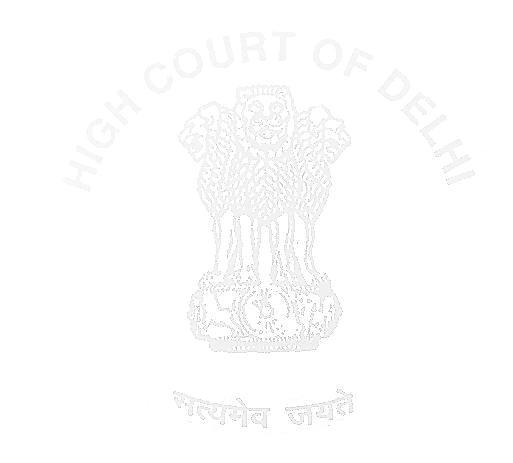

$~52
* IN THE HIGH COURT OF DELHI AT NEW DELHI
% Reserved on: 30.05.2023 Pronounced on: 05.06.2023
+ BAIL APPLN. 3807/2022
SANJAY JAIN (IN JC)..... Petitioner Through: Mr. Siddharth Aggarwal, Sr. Adv. with Mr. Madhav Khurana, Ms. Stuti Gujral, Ms. Trisha Mittal, Ms.

Shaurya Singh, Mr. Faisal Zia Ahmed and Mr. Harsh Yadav, Advs.
versus
ENFORCEMENT DIRECTORATE..... Respondent Through: Mr. Zoheb Hossain, Spl. Counsel of ED, Mr. Vivek Gurnani, Mr. Baibhav and Mr. Hasnain Khawja, Advs. CORAM:
HON'BLE MR. JUSTICE VIKAS MAHAJAN
JUDGMENT
VIKAS MAHAJAN, J.
- The present petition has been filed through the wife/pairokarof the petitioner seeking enlargement of the petitioner on regular bail in connection with ECIR No. DLZO-I/43/2021 dated 20.05.2021 in Ct. C. No. 17/2021 titled asDirectorate of Enforcement v. Amarendra Dhari Singh &Ors., pending before the Court of Ld. Special Judge (PC Act CBI-23), Rouse Avenue Courts, New Delhi.
- During the pendency of the regular bail, the wife of the petitioner has filed an affidavit dated 22.05.2023 praying for grant of interim bail to the petitioner on medical and humanitarian grounds for a period of 3 months alleging precarious health of the petitioner.
Page1of21
- In the affidavit of the wife of the petitioner, it is stated that the petitioner is aged about 57 years and is suffering from various pre-existing ailments like hypertension, depression and anxiety, obstructive sleep apnea, hyperlipidemia, diabetes, damaged mitral valve prolapse and has a history of soft teeth. It is also stated that the health condition of the petitioner has further worsened in jail and he has not been able to get proper treatment. The relevant part of the affidavit reads as under:-

| Sl. | Diagnosis | Medication Prescribed | Submissions |
|---|---|---|---|
| 1. | Hypertension for the last 25 years | Vyamada 50 mg twice/day Nebicard 5 mg once/day Stamlo 5 mg once/day Minipress XL 5 mg twice/day | Placed the Applicant at risk of stroke and/or heart attack. |
| 2. | Depression and anxiety for the last 17 years | Paroxetine 40mg once/day Etilam 0.25mg at nightime Buspin twice/day S- Methiwave twice/day | The Applicant has a history of suffering from panic attacks and suicidal thoughts. |
| 3. | Obstructive sleep apnea for the last 1.5 years | C-PAP (Continuous Positive Airway Pressure) machine and constant supervision by medical | Untreated/ unsupervised can lead to fatal consequences, such as coronary artery disease, heart attacks, heart failure, strokes, multiple episodes. of arrhythmia leading to sudden death. |
Page2of21
| 4. | Hyperlipidemia for the last 27 years | Rosuvas 10mg once/day | Places the Applicant at risk of stroke and/or heart attack, coronary heart disease. |
|---|---|---|---|
| 5. | Diabetes for the last 5 years | Glyciphage 1000mg once/day | Places the Applicant at risk of heart disease, kidney disease, nerve damage and other problems with feet, oral health, vision, hearing and mental health. |
| 6. | Damaged mitral valve prolapsed and history of soft teeth | -- | Requires any dental treatment to be carried out under antibiotics and in sterile conditions to ensure that no infection enters his blood stream/damages his heart. Furthermore, because the Applicant suffers from obstructive sleep apnea, any major surgery involving sedation (such as dental surgeries) can lead to severe breathing problems. |

a. He has been complaining of uneasiness in the chest, dizziness, shortness of breath, nausea, cold sweats and continuous pain radiating to his left shoulder for the last several weeks. He was taken to Safdarjung Hospital on 21.04.2023 by the jail authorities, where ECG/ECHO tests were performed by him. He was advised to undergo Coronary Angiographyhowever the appointment for the same as scheduled by Safdarjung Hospital is only for November 2023.
Page3of21 b. The Applicant experienced dizziness and extreme discomfort on 24.04.2023 for which he has was taken to the Emergency Ward of Deen Dayal Upadhyay Hospital [“DDU”] where an ECG test was performed on him, showing abnormalities/hypertrophy. On 05.05.2023, he was again taken to DDU Hospital and an ECG test was performed, which again revealed abnormalities/hypertrophy. While he has been prescribed certain medication (including blood thinners), there has been no improvement in his physical symptoms and the appointment for Coronary Angiography remains unchanged for November 2023 only. The Applicant has informed me that there isn‟t a resident cardiologist, heart specialist or a central cardiac unit

posted in Tihar Jail for treatment of a heart attack in the event of an emergency.
- In the backdrop of the health condition pleaded in the affidavit, it has been prayed therein as under:
- In view of the above, the Deponent humbly beseeches this Hon‟ble Court to urgently call for a medical report from the concerned jail authorities and furthermore to enlarge the Applicant on interim bail for a period of 3 months or any other period considered reasonable by this Hon‟ble Court, on medical and humanitarian grounds, to enable him to receive critical, appropriate, urgent, and specialized medical care."
- Considering petitioner’s health condition delineated in the affidavit, this Court vide order dated 22.05.2023, requisitioned the medical report of the petitioner from the concerned jail authority, which was received on 26.05.2023. The text of the medical report reads as under:-
OFFICE OF THE SENIOR MEDICAL OFFICER
DISPENSARY, CENTRAL JAILNO,07 TIHAR, NEW DELHI-110064
D.NO./SMO/CJ-07/2023/1055 Date:25-05-2023 Sub: Medical Report of inmate Saniav Jain S/o Santosh Kumar. As per available record, the above said inmate Sanjay Jain S/o Santosh Kumar lodged in CJ-07 since 21/10/2022. At the first Medical Page4of21 Examination (Mulahiza) the inmate patient alleged history of Hypertension since 15 years, Anxiety since 15 years, sleep apnoea since 02 years and diabetes since 02 years. No fresh injury noted and denied of any history of substance abuse. The inmate patient is allowed to carry medicines as per Court order. On 01/11/2022, 15/11/2022, 18/11/2022, and 25/11/2022, the inmate patient was reviewed by Jail visiting SR Medicine for the follow-up of diabetes and Hypertension wherein he was advised medicine

accordingly. On 13/12/2022, the inmate patient was reviewed by Jail Visiting SR Surgery for the complaint of pain and ingrowths of bilateral great toe. He was examined and advised partial nail excision along with medicines and review in DDU Hospital Surgery dept. which he declined and on 30/12/2022, the inmate patient expressed willingness and was referred to DDUH Surgery Dept. for the same complaint and he was advised cleaning & dressing of right Great Toe in MOT along with medication. The inmate patient was reviewed by Jail Visiting Dental consultant for the complaint of pain in teeth for which he was advised medicine and on 30/12/2022, the inmate patient referred to DDU Hospital Dental dept. for the same complaint where he was examined and was advised root canal treatment for right upper teeth and capping for left lower teeth. As the capping facility is not available, the inmate patient is referred to MAIDS for further management. (ANNEXURE A1). In January, the inmate patient is referred to MAIDS, as advised at DDU Hospital Dental Department, wherein he was advised Dental Extraction of right upper tooth and poor prognosis was mentioned. As the inmate patient is a Diabetic, Hypertensive and is on Blood Thinner (ecosprin), the inmate was advised to get clearance from consultant Physician. (ANNEXURE A2). On 12/01/2023, the inmate patient was referred to DDU Hospital Surgery and Dermatology Department for pain great toe. It was Page5of21 diagnosed Onychogryphosis and was advised Total Nail Avulsion at appropriate centre.(ANNEXURE A3). The inmate patient was reviewed, on 21/04/2023, at Safdarjung Hospital Cardiology department for his complaint of Dyspnoea on exertion for which he was examined thoroughly and was advised EGG, 2D ECHO screening , CT coronary angiography and related blood investigation along with medicines. Further he was referred for

Pulmonology opinion in view of Obstructive Sleep Apnea, Psychiatry opinion in view of Anxiety and also Ophthalmology. On the same day ECG and 2D ECHO was done and 2D echo shows Ejection fraction.
55%(normal), suggestive of Left Ventricular Hypertrophy and LVDD grade 3. CT Coronary Angiography was scheduled on 11/11/2023, along with KFT and Rs.2000/- .(ANNEXURE A4, A5, & A6). On 24/04/2023, the inmate patient was referred to DD Hospital Emergency Department for the complaint of Head ache and dizziness and Sinus bradycardia for which he was reviewed by Medicine SR and was advised medicines along with Cardiology Opinion. (ANNEXURE A7). On 05/05/2023, the inmate patient visiting jail dispensary with the compliant of heaviness in Chest and anxiety. ECG revealed Tinversion in lead V2, V3, V4, V5, V6 and primary treatment Ecospirin and sublingual Nitrates were given and was immediately referred to DDU Hospital Emergency Department for further evaluation and management. The inmate patient was reviewed by SR Medicine wherein he was prescribed medicines for HTN and DM2. (ANNEXURE A8, A9). In view of low mood and anxiety, the inmate patient was examined by specialist Psychiatry multiple times at CJ-07 Dispensary wherein he was advised continue the same medicine.
Page6of21 On 12/05/2023, the inmate patient was reviewed by jail visiting Medicine SR for his compliant of Dyspnoea on & off and back ache, the inmate patient was examined and was advised to continue the prescribed medicines. Further on inmate patient complained of not fully aware of using C-PAP machine and asking for attendant, and the same was recommended by Medicine SR.(ANNEXURE 10)

As scheduled, On 15/05/2023, the inmate patient was referred to MAIDS and IOPA was done suggestive of horizontally impacted teeth, further was advised for extraction of left lower teeth, along with prior blood investigation and with clearance from physician. On 19/05/2023, the inmate patient was referred to Neurosurgery department at GB Pant Hospital, for the complaint of low Back pain with Radiculopathy. He was thoroughly examined and was X-Ray LS spine, MRI LS spine, related blood investigations, along with medicine. MRI LS spine is scheduled on 29/07/2024. (ANNEXURE 11). At present, the inmate patient is a follow up case of HTN, DM2, low mood and anxiety, low back pain, dental pain, onychogryphosis and CAD, for which he was advised regular medication, dental extraction and root canal, partial nail avulsion, and was scheduled for MRI L-S Spine and CT- Coronary Angiography (as advised by the specialist doctor) even after medical treatment, the inmate patient still complaints of same symptoms. This is for kind information and onward submission.
- Articulating the petitioner’s case for grant of interim bail on medical grounds, Mr. Siddharth Aggarwal, the learned Senior Counsel for the petitioner, at the outset submits that the health condition of the petitioner is precarious and requires urgent diagnostic and perhaps surgical intervention.
Page7of21
He submits that the authorities have not been able to provide the requisite medical treatment which is immediately warranted given the petitioner’s deteriorating medical condition.
- Referring to the affidavit of petitioner’s wife /pairokar, the learned senior counsel for the petitioner submits that the petitioner has been complaining of uneasiness in the chest, dizziness, shortness of breath nausea, cold sweats and continuous pain radiating to his left shoulder for which he

was taken to Safdarjung Hospital on 21.04.2023, where ECG/ECHO tests were performed. After a review of the test results, the petitioner was advised to undergo Coronary Angiography for which the date has been given in November 2023. The learned senior counsel for the petitioner submits that the delay in conducting the Coronary Angiography is by itself a ground to grant the petitioner interim bail on medical grounds. Reliance in this regard is placed on the judgment in Vijay Aggarwal through Parokar v. Directorate of Enforcement1passed by a co-ordinate bench of this Court.
- Elaborating further on the alleged precarious health condition of the petitioner it is submitted that the petitioner was taken to DDU Hospital on 24.04.2023 and 05.05.2023 and the ECG tests which were performed on him showed abnormalities/hypertrophy despite which the date for the Coronary Angiography remains unchanged. The learned senior counsel for the petitioner further submits that the petitioner is also suffering from panic attacks which render him immobile for several hours.
- It is also submitted by Mr. Aggarwal, the learned Senior Counsel that the petitioner is having acute pain in his mouth/jaw since December 2022 and upon investigation it has been learnt that the petitioner is suffering from 12022 SCC OnLine Del 4494 Page8of21 severe tooth attrition requiring multiple tooth extraction surgeries and root canal treatment. The pain suffered by the petitioner is stated to have forced the petitioner to be on a semi-solid/liquid diet.
- Further, it is submitted that the X-ray of the petitioner has revealed that he has slipped discs at L-4/L-5 and S1 which has impaired the movement of the petitioner and though the applicant was referred to GP Pant Hospital on 19.05.2023, for an MRI test to rule out lumbar spondylosis but

the MRI LS Spine has been scheduled on 29.07.2024. The failure to schedule an MRI at an early date, according to Mr. Aggarwal, points towards the failure of the State to provide urgent and specialized healthcare that the petitioner requires.
- Another ailment that the petitioner is stated to be suffering from is obstructive sleep apnea which requires the petitioner to use a CPAP machine which has been provided to him in jail but at the same time, an attendant is required to monitor the machine during the night so as to ensure that the machine is not cut off at any point.
- In view of the aforesaid ailments being suffered by the petitioner, Mr. Siddharth Aggarwal, the learned Senior Counsel for the petitioner, while relying upon the decisions of this Court titled asDevki Nandan Garg v. Enforcement Directorate2, Kewal Krishan Kumar v. Enforcement Directorate3and Syed Abdul Ala v. Narcotics Control Bureau, South Zone4 submits that as the petitioner is sick and infirm, the petitioner does not need to satisfy the twin conditions as envisaged in Section 45 of the Prevention of Money Laundering Act, 2002, to seek interim bail.
22022 SCC OnLine Del 3806 32023 SCC OnLine Del 1547
Page9of21
- On the other hand, Mr. Zoheb Hossain, learned Special Counsel appearing for the Enforcement Directorate submits that the medical ailments of the petitioner are not serious and the requisite medical attention is being provided to the petitioner in the jail premises. Inviting attention of the Court to paragraph no. 2 of the affidavit of petitioner’s wife, the learned counsel submits that the ailments which the petitioner is stated to be suffering from like hypertension, depression and anxiety, obstructive sleep apnea,

hyperlipidemia, diabetes, damaged mitral valve prolapse are lifestyle diseases and can be adequately managed in jail premises with suitable oral medication.
- The learned Special Counsel further submits that the Supreme Court, as well, as this Court has taken a consistent view that where an individual seeks interim bail on medical grounds, bail shall be granted only in cases where the requisite medical facilities cannot be provided by the jail authorities. Reliance in this regard is placed on the decisions of the Supreme CourtinState v. Jaspal Singh Gill5andState of Uttar Pradesh v. Gayatri Prasad Prajapati6.
- Mr. Hossain also relied upon the decision of the Supreme Court in Pawan Alias Tamatar v. Ram Prakash Pandey, (2002) 9 SCC 166, to contend that the discretion vested in Courts to grant bail on medical grounds should be exercised in a sparing and cautious manner and every nature of sickness will not entitle the accused to be released on bail unless it is demonstrated that the sickness is of such a nature that if the accused is not released, he cannot get proper treatment. Further placing reliance upon the decision of a Co-ordinate Bench of this Court in Directorate of Page10of21 Enforcement v. Raj Singh Gehlot7, the learned Special Counsel urges that in the absence of compelling reasons warranting grant of interim bail on medical grounds, the Courts shall not exercise their discretion in granting bail to the accused.
- Furthermore, Mr. Hossain submits that the jail authorities are fully equipped to tackle all major ailments including the ailments suffered by the petitioner. He invites the attention of the Court to the guidelines issued by

the office of the Director General (Prisons) to contend that as when the situation demands, a prisoner can be referred to a specialized hospital for treatment including All India Institute of Medical Sciences (AIIMS). The relevant portion of the office order bearing no. PA/DIGP/CJ/2011/78 dated 10.02.2011 reads as under: "To streamline the outside OPD and referrals, the following guidelines are issued for strict compliance by all concerned:- A. All the inmate-patients, whether lodged in Tihar or in DJR firstly must be treated at the dispensaries of respective jails and then at Central Jail Hospital before sending to any outside hospital.
B. If the Senior Medical Officer of dispensary of respective jail finds it must, only in that case the first referral Baba Saheb Ambedkar Hospital will be first referral hospital for District Jail Rohini, invariably, C. Only after the written recommendation of Deen Dayal Hospital or Baba Saheb Ambedkar Hospital, as the case may be, the referral will be made to G.B. Pant, Lok Nayak Jai Prakash Narayan, Maulana Azad Institute of Dental Sciences, Guru Nanak Eye Centre &Safdarjung Hospital keeping in view medical problem of prisoner /patient. These hospitals will fall in the category of IInd referral hospitals.
Page11of21
D. The IIIrd referral, will only be All India Institute of Medical Sciences for both Central Jail Tihar and District Jail Rohini that too, on the recommendations of IInd referral hospitals mentioned in para (C).
- In respect of the ailments which have been stated in the affidavit of petitioner’s wife, the learned Special Counsel submits that the said affidavit does not hold much water as petitioner’s wife is not trained in medicine, and

besides that, she is related to the petitioner, therefore, she cannot make a fair and objective assessment of the petitioner's medical health.
- The learned special counsel has also handed over in Court the two documents – (i) letter dated 29.05.2023 of the Directorate of Enforcement written to the Medical Superintendent, Ram Manohar Hospital, New Delhi requesting to constitute a Medical Board to examine and review the available medical records of the petitioner, and (ii) Minutes of Meeting of Board held on 30.05.2023, to contend that the medical condition of the petitioner cannot be considered as life threatening or serious condition.
- Learned special counsel for the respondent has also placed reliance upon the observations made by the Hon’ble Division Bench of this Court in para 20 in Athar Parvez vs. State, CRL. REF. 1/2015 decided on 26.02.2016 while considering the issue whether the provisions and conditions of Section 37 of NDPS Act would apply only to cases of bail or would also apply when the accused seeks interim bail, which read as under:
- Having considered the case law on the subject, we are inclined to answer the reference in the following manner: [1] The trial or the appellate Courts after conviction are entitled to grant "interim" bail to the accused/ convict when exceptional and extra-ordinary circumstances would justify this indulgence.
Page12of21 The power is to be sparingly used, when intolerable grief and suffering in the given facts may justify temporary release.
[2] While rejecting or accepting an application for grant of "interim" bail, the trial / appellate Courts will keep in mind the strict provisions of Section 37 /32A of the NDPS Act and only when there are compelling reasons which would justify and require the grant of "interim" bail, should the application be

allowed. The Court must take into account whether or not the accused/convict is likely to commit or indulge in similar violations.
[3] While examining the question of grant of "interim" bail, the Court would consider whether sending accused / convict in police custody would be suffice and meets the ends of justice, keeping in view the nature of the offence with which the accused is charged or/and the past conduct of the accused.
[4] Where "interim" bail should be given, it would be granted for minimal time deservedly necessary and can be subject to certain conditions. Interim bail is interim or for a short duration.”
- I have heard the learned Senior Counsel for the petitioner, as well as, the learned special counsel for the Directorate of Enforcement and have also perused the record.
- The short question to be decided at this stage is whether the petitioner, who is in custody, is entitled to interim bail on medical grounds.
- Article 21 of the Constitution provides for protection of life and personal liberty. The said right cannot be curtailed "except according to procedure established by law". The liberty of a person who is accused or convicted of an offence can be curtailed according to procedure established by law. However, right to health is also recognized as an important facet of Page13of21 Article 21 of the Constitution. Merely because a person is an under trial or for that matter even a convict, lodged in jail, this facet of right to life cannot be curtailed. It remains an obligation of the state to provide adequate and effective medical treatment to every person lodged in jail, whether under trial or a convict.
- The Hon’ble Supreme Court inPt. Parmanand Katara vs. Union of India and Ors.,(1989) 4 SCC 286, has also emphasized on preservation of

life both of an innocent person or a criminal liable to punishment, in the following words: - “....7.There can be no second opinion that preservation of human life is of paramount importance. That is so on account of the fact that once life is lost, the status quo ante cannot be restored as resurrection is beyond the capacity of man. The patient whether he be an innocent person or be a criminal liable to punishment under the laws of the society, it is the obligation of those who are in charge of the health of the community to preserve life so that the innocent may be protected and the guilty may be punished. Social laws do not contemplate death by negligence to tantamount to legal punishment.”....
- Again, the Hon’ble Supreme Court inRe-inhuman Conditions In 1382 Prisons, (2017) 10 SCC 658,in no uncertain terms has articulated that medical assistance to all is a human right to which prisoners are also entitled to. The material part of the decision reads as under:-
“....34.Adverting to the Nelson Mandela Rules, the learned Attorney
General also expressed the view that the State Governments have several development priorities and while they will certainly look after the interests of prisoners, there are other issues that might require greater attention and greater financial commitment. While this may be so, we are clearly of the view that Article 21 of the Constitution cannot be put on the back-burner and as mentioned in the Mandela Rules even prisoners are entitled to live a life of dignity. Therefore, no State Government can shirk its duties and responsibilities for Page14of21 providing better facilities to prisoners. If a State Government is unable to do so, it should be far more circumspect in arresting and detaining persons, particularly undertrial prisoners who constitute the vast majority of those in judicial custody. The State Governments and the prosecution do not have to oppose every bail application nor do they have to ask for the remand of every suspect pending investigation. If the fundamental right to life and liberty postulated by Article 21 of the Constitution is to be given its true meaning, the Central Government and the State Governments must accept reality and not proceed on the basis that prisoners can be treated as chattel.

xxxx xxxx xxxx xxxx xxxx 58.8.Providing medical assistance and facilities to inmates in prisons needs no reaffirmation. The right to health is undoubtedly a human right and all State Governments should concentrate on making this a reality for all, including prisoners. The experiences in Karnataka, West Bengal and Delhi to the effect that medical facilities in prisons do not meet minimum standards of care is an indication that the human right to health is not given adequate importance in prisons and that may also be one of the causes of unnatural deaths in prisons. The State Governments are directed to study the availability of medical assistance to prisoners and take remedial steps wherever necessary.”....
- For deciding the short question at hand, at this stage it will be apt to advert to the provision of Section 45(1) of the Prevention of Money Laundering Act, 2005, the first proviso of which provides for grant of bail on medical grounds. Section 45(1) of the Act reads as under:-
- Offences to be cognizable and non-bailable.—
- Notwithstanding anything contained in the Code of Criminal Procedure, 1973 (2 of 1974), no person accused of an offence punishable for a term of imprisonment of more than three years under Part A of the Schedule shall be released on bail or on his own bond unless— Page15of21
- the Public Prosecutor has been given an opportunity to oppose the application for such release; and
- where the Public Prosecutor opposes the application, the court is satisfied that there are reasonable grounds for believing that he is not guilty of such offence and that he is not likely to commit any offence while on bail: Provided that a person who is under the age of sixteen years or is a woman or is sick or infirm, or is accused either on his own or along

with other co-accused of money laundering a sum of less than one crore rupees may be released on bail, if the special court so directs:”
- A Co-ordinate Bench of this Court in Kewal Krishan Kumar V. Enforcement Directorate, 2023 SCC OnLine Del 1547, referring to the relevant clauses of the Finance Bill introduced on 1stFebruary, 2018 for amending Section 45 of the PMLA, observed thata purposive interpretation of the proviso to section 45(1) shows that it has been incorporated as a lenient provision or to afford „relaxation‟ to a sick or infirm person as noted in the Statement of Objects and Reasons to PMLA.
- Thus, by way of first proviso to sub-section (1) of Section 45 of PMLA, the legislature has carved out an exception which empowers the special Court to grant bail on humanitarian grounds to a person who is under the age of sixteen years or is a woman or is sick or infirm, without insisting upon strict compliance of twin conditions, namely, (i) there are reasonable grounds for believing that accused is not guilty of offence of moneylaundering and (ii) he is not likely to commit any offence while on bail.
- The reliance placed by the learned Special Counsel for the Directorate of Enforcement on the decision inAthar Parvez (supra)to contend that the twin conditions under Section 45 of the PMLA will apply even in cases where the accused seeks interim bail on medical grounds, is misplaced. The Page16of21 decision in Athar Parvez (supra) was rendered in the context of the provisions of Section 37 of the NDPS Act and in the said Section there is no provisopari materiato the first proviso to sub-section (1) of Section 45 of the PMLA carving out an exception to the strict compliance of identical twin conditions incorporated in Section 37.
- The power to grant bail on medical grounds under the first proviso to Section 45(1) of the Act is discretionary, therefore, the same has to be

exercised in a judicious manner guided by principles of law after recording satisfaction that necessary circumstances exist warranting exercise of such a discretion.
- InPawan Alias Tamatar (supra),the High Court had granted bail to the accused merely on the pretext on the allegations of ailment were not specifically denied. The Hon’ble Supreme Court while setting aside of the order of the High Court observed that the ailment of the accused was not of such a nature requiring him to be released on bail. It was further observed that the accused can always apply to the Jail authorities to see that he gets the required treatment.
- Clearly, it is not every ailment that entitles an accused for grant of bail on medical grounds. The expression used in the first proviso to Section 45 of PMLA is that a person can be released on bail if he is “sick” or “infirm”.
- In Kewal Krishan Kumar(supra) this Court laid down following guiding principle as to the level of sickness that will entitle a person to bail under proviso to section 45(1):- “Though no straight jacket formula can be laid down as to what is the level of sickness that a person is to suffer to entitle him to bail under section 45(1) proviso, the thumb rule is that the sickness should be so serious that it is life threatening and the treatment is so specialized that it cannot be provided in the jail hospital. However, this is not an Page17of21 exhaustive parameter and each case will depend on its own peculiar facts and circumstances.”
- It was further observed in Kewal Krishan Kumar(supra)that for granting bail on the ground of infirmity, it must consist of a disability which incapacitates a person to perform ordinary routine activities on a day-to-day basis. The material part of the decision reads as under:-

“Mere old age does not make a person „infirm‟ to fall within section 45(1) proviso. Infirmity is defined as not something that is only relatable to age but must consist of a disability which incapacitates a person to perform ordinary routine activities on a day-to-day basis.”
- InVijay Aggarwal through Parokar (supra)a Co-ordinate Bench of this Court while granting interim bail on medical grounds in a case under PMLA, observed that the discretion for granting interim bail on medical ground may not be exercised only at a stage when the person is breathing last or is on the position that he may not survive.
- Plainly, the health of the petitioner has to be given primacy and it is his fundamental right to be given adequate and effective treatment whilst in jail. However, in case specialized or sustained treatment and care is necessary, having regard to the petitioner’s medical condition which is not possible whilst in jail, then the petitioner will be entitled to the benefit of interim bail in terms of the first proviso to Section 45(1) of the PMLA.
- A perusal of the medical report submitted by the jail authorities, as well as the medical record placed on record, shows that the petitioner is suffering from various medical conditions for which he has been taken to different Government Hospitals for treatment multiple times. Diagnostic procedures like CT Coronary Angiography for cardiac ailments and MRI LS Page18of21 spine have also been prescribed by Safdarjung Hospital and G.B. Pant Hospital, respectively, but the appointment scheduled for CT Coronary Angiography at Safdarjung Hospital is 11.11.2023. Similarly, the MRI LS Spine of the petitioner is scheduled on 29.07.2024 at GB Pant Hospital. The appointments for the diagnostic procedures are scheduled almost after five months to one year, which itself shows that the Government Hospitals are overburdened and not in a position to address the medical issues being faced

by the petitioner whilst in jail, particularly on priority they deserve.
- However, there is no expert opinion on record suggesting as to how urgent is the need for the petitioner to undergo the CT Coronary angiography for his cardiac ailment and MRI LS spine and whether on account of delay in the said diagnostic procedures and consequent delay in treatment, the life of the petitioner could be at risk.
- In view of the legal position discussed above, an opinion of experts is also required as to whether any ailment of the petitioner or all the ailments taken together, warrant specialized or more sustained treatment and care, which is not possible in jail.
- In the absence of an opinion of the experts it is difficult for this Court to come to the conclusion as to whether it is a case for grant of interim bail on the medical grounds. The Court cannot assume the role of an expert and make assessment of its own as regard the medical condition of the petitioner on the basis of medical records placed on the Court file.
- At the same time, on humanitarian grounds, the medical condition of the petitioner as articulated in the affidavit of petitioner’s wife cannot be simply brushed aside given the fact that there is material on record Page19of21 suggesting that the petitioner is heart patient, as well as having spine related issues, besides other ailments.
- In the circumstances, this Court deems it appropriate, to constitute a medical board to evaluate the medical condition of the petitioner. It is accordingly, directed as under:
- The Director, All India Institute of Medical Sciences (AIIMS) is directed to immediately constitute a Medical Board of Doctors from

minimum three different specialties having regard to the nature of ailments the petitioner is stated to be suffering from, for evaluating the medical condition of the petitioner.
- The Jail Superintendent is directed to furnish all medical records of the petitioner to the Medical Board of Doctors so constituted on or before 07.06.2023. The wife/pairokar of the petitioner is also at liberty to furnish the relevant medical records of the petitioner, as may be available with her, to the Board, with a copy thereof to the learned Special Counsel for the Directorate of Enforcement.
- The Jail Superintendent shall also ensure that the petitioner is presented before the Medical Board on 07.06.2023 at the time and place indicated by the Board.
- Upon evaluation of medical records and examination of the petitioner, the Medical Board shall furnish its report to this Court, on or before 10.06.2023.
- The report must,inter alia, indicate specifically – (a) as to how urgent is the need for the petitioner to undergo the CT Coronary Angiography for cardiac problem and MRI LS spine for spine related Page20of21 issues or any other diagnostic tests/procedures for the medical conditions he is suffering from.; (b) whether on account of delay in the said diagnostic procedures and consequent delay in treatment, the life of the petitioner could be said to be at any kind of risk; (c) whether any single ailment of the petitioner or all the ailments taken together, warrant specialized or more sustained treatment and personal care, which cannot be provided in jail.

- A copy of this order be forwarded through the pairokarof the petitioner to the Director, AIIMS, who shall ensure compliance of this order. A copy of this order be also sent to the Jail Superintendent for necessary compliance.
- Orderdastiunder the signatures of the Court Master
- List on 12.06.2023.
- Order be uploaded on the website of this court.
VIKAS MAHAJAN, J
JUNE 05, 2023 N.S. ASWAL
Page21of21